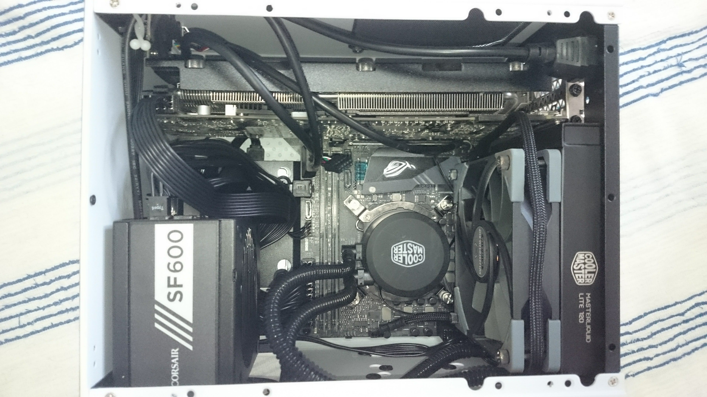

PCの組み立て
 いままでに2度PCをパーツから組んだことがあります。
いままでに2度PCをパーツから組んだことがあります。
1度目は普通のゲ―ミングPCで、2度目はVR専用のコネクタがあり、VR機器(HTC VIVE)を直接接続できるものでした。(ゲームはあまりしませんが)  簡易水冷式には、寿命があることを、痛感した1台です。(すでに空冷に変更しました)
話しはかわりますが、舞鶴高専1年のとき、ノートPCのWindows8からWindows10へのアップグレードに失敗し、ノートPCにUbuntuを入れていましたが、
Windows10では、マザーボードにより、個体を認識するらしく、もう一度Windows10を入れなおすとアクティベーションコードなしで、認識したことは感動物でした。(ほっとした)